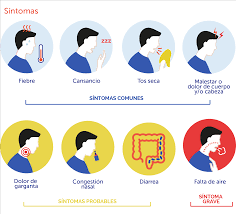
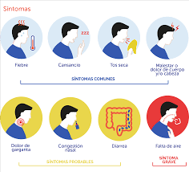

COVID-19
OPCIONES

 

¿Cuales son los síntomas?
Los síntomas más habituales son los siguientes:
- Fiebre
- Tos
- Cansancio
- Pérdida del gusto o del olfato
Los síntomas menos habituales son los siguientes:
- Dolor de garganta
- Dolor de cabeza
- Molestias y dolores
- Diarrea
- Erupción cutánea o pérdida del color de los dedos de las manos o los pies
- Ojos rojos o irritados